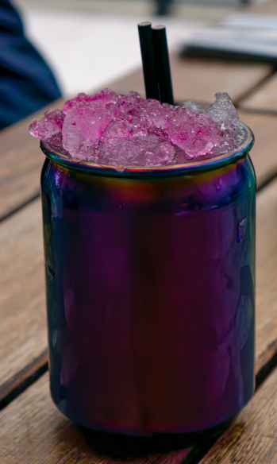

Purple Monstrosity Fruit Smoothie
Home
Recipe source

Description
This is a great smoothie for breakfast - and sometimes dinner!
You can substitute the orange juice with any mix of juices or even soy milk! The soy milk adds more of a milk shake quality than the juice does.
Ingredients
- 2 frozen bananas, skins removed and cut in chunks
- 1/2 cup frozen blueberries
- 1 cup orange juice
- 1 tablespoon honey (Optional)
- 1 teaspoon vanilla extract (Optional)
Steps
- Place bananas, blueberries and juice in a blender, puree. Use honey and/or vanilla to taste. Use more or less liquid depending on the thickness you want for your smoothie.